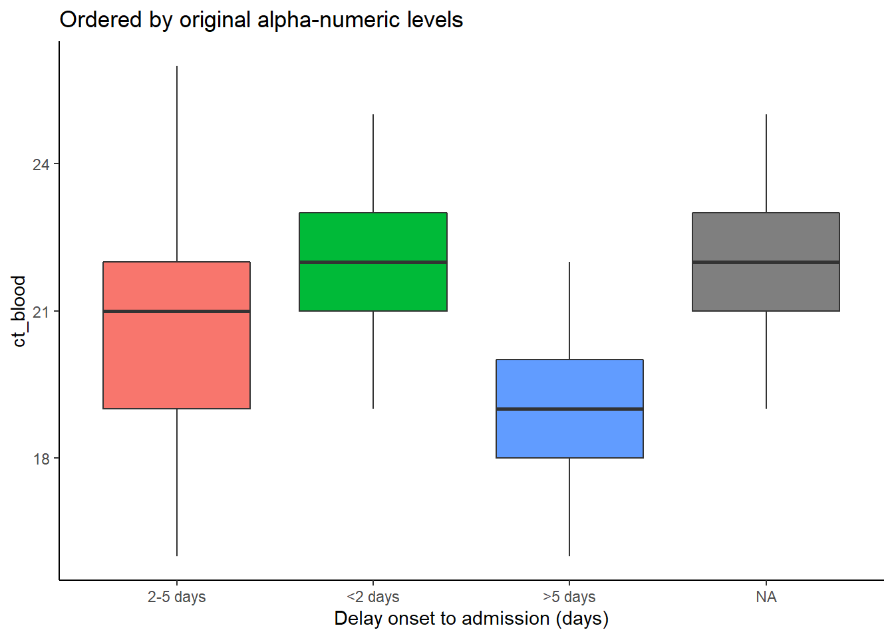
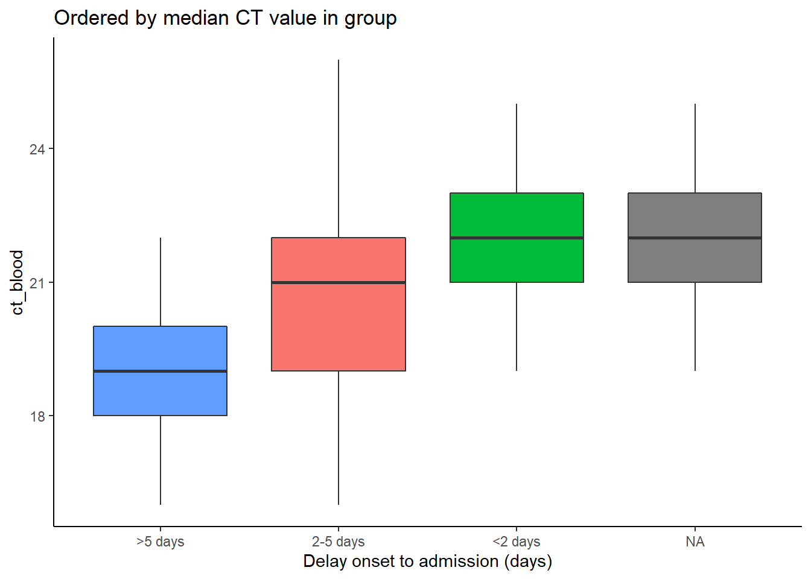

11 Фактор

Боломжит утгууд тодорхой байдлаар багцлагдан, эрэмбэлэн ангилагдсан датаг R дээр фактор дата гэнэ.
График, хүснэгт байгуулахад default-аар цагаан толгойн дарааллаар, багаас ихрүү чиглэлтэй (alpha-numeric) гарч ирдэг. Харин баганын утгад эрэмбэ (шатлал) тогтоосноор болиулж болдог. Үүний тулд карактер, тоон багануудыг фактор хэлбэрт хувиргах ашаардлагатй. Фактор датаны өөр ач холбогдол бол графикт стандарт легендийг байгуулж өгдөг. Энэ нь датанд аль нэг утга байхгүйгээс легендийн байрлал график янз бүр болж өөрчлөгдөөд байдаг асуудлыг шийдэж өгдө.
Энэ хэсэгт forcats багцын функцууд ( “For”categorical variables”-гэсэн үгийн товчлол) болон base R- зарим функцыг тайлбарлана. Мөн тархварзүйн долоо хоногтой (epiweeks) хэсэгт lubridate, aweek гэсэн багцуудаас цухас яригдах болно.
forcats багц дах функцуудын бүрэн жагсаалтыг here –ээс үзэж болно. Энд Энд зөвхөн чухал хэрэглэгддэг функцуудыг тайлбарласан.
11.1 Бэлтгэл
Багцыг ачааллах
Энэ хэсэгт анализ хийхэд шаардлагатай багцуудыг доорхи кодоор ачааллана.pacman багцын p_load() функцээр шаардлагатай багцыг татаж аваад ачааллана уу. Өмнө татаж авсан багцуудаа base R -ын library()-аар ачааллаж болно. Багцын талаарх нэмэлт мэдээллийг [R basics] хэсгээс харна уу.
pacman::p_load(
rio, # импорт/экспорт
here, # файлын зам
lubridate, # огноог янзлана
forcats, # факторыг янзлана
aweek, # автоматаар фактор үүсгэж тархварзүйн долоо хоног (epiweeks) үүсгэнэ
janitor, # хүснэгт
tidyverse # дата менежмент, график
)Дата импортлох
Жишээ дасгалуудад Эбола дэгдэлтийн үеийн зохиомол дата ашиглах болно. Эдгээр дасгалуудыг дагаж хийхийг хүсвэл линкийн “clean” linelist дээ дарж татаж авна уу (as .rds file). Датагаа rio-ын import()функцээр импортлож болно (энэ нь.xlsx, .rds, .csv - зэрэг олон дата төрөлтэй ажиллаж чадна. [Import and export] хэсэгт илүү тайлбарласан).
# датаг импортлох
linelist <- import("linelist_cleaned.rds")Шинээр ангилагдсан (categorical) хувьсагч үүсгэх
Ойлгомжтой тайлбарлах үүднээс хамгийн нийтлэг хэрэглэгддэг үйлдэл болох ангилагдсан хувьсагч шинээр хэрхэн үүсгэхийг үзэх болно.
Тоон баганыг фактор хэлбэрт хувиргаснаар статистик бодолт хийх боломжгүй өолдог гэдгийг санаарай.
Багана үүсгэх
Жишээгээр days_onset_hosp (өвчний шинж эхэлснээс эмнэлэгт хэвтэх хүртэл хугацаа) баганын мөрүүдийг ангилан ялгаж delay_cat гэсэн шинэ багана үүсгэх болно. Үүнийг dplyr -ын case_when() функцээр хйинэ. case_when() функцын логик шалгуур (баруун тал) дэс дарааллан мөр болгонд үйлчилж, үүссэн утга нь delay_cat шинэ баганын (зүүн тал) тохирох мөрөнд ордог. case_when() функцын талаар [Cleaning data and core functions] хэсэгт дэлгэрэнгүй тайлбарласан.
Утгын default эрэмбэ
case_when()-ээр үүсгэдсэн delay_cat багана карактер утгатай ангилагдсан багана байдаг. Өөрөөр хэлбэл фактор болж амжаагүй байдаг. Тийм ч учраас давтамж харуулсан хүснэгт дээр ангилалын жагсаалт цагаан толгойн дарааллаар эрэмбэлэгдсэн байдаг. Гэтэл энэ дараалал тухайн датаг ойлгоход учир дутагдалтай байдаг:
table(linelist$delay_cat, useNA = "always")##
## <2 days >5 days 2-5 days <NA>
## 2990 602 2040 256Barplot байгуулахад x-тэнхлэгийн дараалал автомат тохируулгатай байдаг ( R график байгуулахын тулд хамгийн их хэрэглэгддэг ggplot2 багцын талаар [ggplot basics] хуудасанд дэлгэрэнгүй тайлбарласан).

11.2 Фактор болгож хувиргах
Карактер эсвэл тоон баганыг фактор болгож хувиргахад forcats -ын аль ч функцыг хэрэглэж болно (дэлгэрэнгүй мэдээлэл below -д орсон). Эдгээр функц нь датаг юуны түрүүнд фактор болгож хувиргадаг тул цаашид шатлалтай ангилал үүсгэх боломжтой болдог. Тухайлбал шатлалын эрэмбийг fct_relevel() -ээр зааж өгч болно. Гэтэл as_factor() функц зөвхөн факторт хувиргахаас өөр үйлдэл нэмж хийдэггүй.
base R -ын factor() функц мөн баганыг факторлуу хувиргадаг ба шатлалын эрэмбийг levels = аргументэд нь та өөрөө зааж өгөх болно.
Дор жишээнд mutate() болон fct_relevel() -ээр delay_cat баганыг карактерээс фактор болгож хувиргахыг харуулав. delay_cat багана үүсэх талаар өмнөх Preparation хэсэгт тайлбарласан.
linelist <- linelist %>%
mutate(delay_cat = fct_relevel(delay_cat))Одоо энэхүү баганын “утгууд” фактор “түвшингүүд” боллоо гэсэн үг. Энэхүү үүсгэсэн түвшний жагсаалтыг эрэмбийг base R-ын levels() функц эсвэл table() эсвэл janitor -ын tabyl() функцуудээр харж болно. Түвшний эрэмбэ нь default-аар цагаан толгойн болон багаас ихсэх (alpha-numeric) дарааллар гарч ирдэг. NA бол факторын түвшинд тооцогдохгүй болохыг анхаарна уу.
levels(linelist$delay_cat)## [1] "<2 days" ">5 days" "2-5 days"Үүнээс гадна fct_relevel() -ээр түвшний эрэмбийг гараар зааж өгч болно. Ингэхдээ доор үзүүлсний дагуу түвшин заасан утгуудаа таслалаар тусгаарлаж, хашилтанд уагсааж бичнэ. Датан дах утгаасаа үг үсгийн зөрөөгүй бичхийг анхаар. Хэрэв датанд байхгүй түвшин үүсгэх хэрэгтэй бол fct_expand() instead)-ыг хэрэглэ.
linelist <- linelist %>%
mutate(delay_cat = fct_relevel(delay_cat, "<2 days", "2-5 days", ">5 days"))Дээрх коммандаар зааж өгсний үр дүнд түвшний эрэмбэ илүү ойлгомжтой болно байна.
levels(linelist$delay_cat)## [1] "<2 days" "2-5 days" ">5 days"График дээр хэвлэгдэх дараалал ч гэсэн илүү ойлгомжтой болж байна.

11.3 Түвшин нэмэх, хасах
Нэмэх
Фактортоо нэмж түвшин оруулах бол fct_expand()-ыг хэрэглэ. Багана болон нэмэгдэж буй түвшний нэрийг (таслалаар тусгаарлаж) функцэл оруулдаг. Баганын нийт утгыг хүснэгтэлж харвал шинээр үүсгэсэн түвшин 0 давтамжтай харагддаг. base R-ын table() эсвэл janitor-ын tabyl() -аар хүснэгт болгож хараарай:
linelist %>%
mutate(delay_cat = fct_expand(delay_cat, "Not admitted to hospital", "Transfer to other jurisdiction")) %>%
tabyl(delay_cat) # хүснэгт хэвлэ## delay_cat n percent valid_percent
## <2 days 2990 0.50781250 0.5308949
## 2-5 days 2040 0.34646739 0.3622159
## >5 days 602 0.10224185 0.1068892
## Not admitted to hospital 0 0.00000000 0.0000000
## Transfer to other jurisdiction 0 0.00000000 0.0000000
## <NA> 256 0.04347826 NAТэмдэглэл: forcats -д дутуу утгыг (NA) хялбар аргаар түвшин болгож хувиргах тусгай функц байдаг. Missing values хэсгийг нэмж үзнэ үү.
Хасах
fct_drop()-ээр “ашиглагдаагүй”, 0 давтамжтай түвшинг хасдаг. Өмнөх жишээний нэг түвшин (“эмнэлэгт хэвтээгүй тохиолдлууд”) 0 давтамжтай байна. Фактортай баганаа fct_drop()-д оруулснаар энэхүү 0 давтамжтай түвшин хасагдна:
## delay_cat n percent valid_percent
## <2 days 2990 0.50781250 0.5308949
## 2-5 days 2040 0.34646739 0.3622159
## >5 days 602 0.10224185 0.1068892
## <NA> 256 0.04347826 NA11.4 Түвшний эрэмбийг тохируулах
forcats -ын функцуудээр түвшний эрэмбийг тохируулахад хялбар (багана фактор хэлбэрт хувирсан байх шаардлагатай):
Ингэхдээ фактор баганад хоёр янзаар үйлчилнэ:
- Хүснэгтийн багана: датанд өөрчлөлт хийгдсэн тул цаашид хийгдэх үйлдэлд нөлөөлнө.
- График дотор: өөрчлөлт зөвхөн график дотор хийгдэх болно.
Гараар гүйцэтгэх
Фактор дах түвшний эрэмбийг гараар янзалж болно. Фактор бус баганыг функцэд оруулбал багана эхлээд фактор хэлбэрт хувирдаг.
Хаалтан дотор баганын нэрийг оруулаад араас нь дараахь хоёрын аль нэгийг оруул:
- Түвшнүүдийг бүгдийг хүссэн дарааллын дагуу жагсааж оруулна (карактер вектор хэлбэрээр
c()) эсвэл
- Засагдах шаардлагатай нэг ширхэг түвшний нэрийг оруулаад түүний шинэ эрэмбийн байрлалыг
after =аргументэд зааж өгнө.
Энэхүү жишээнд delay_cat баганын түвний эрэмбийг дахин зааж өгч (өмнө нь фактор байсан) хүссэн дарааллалдаа хэрхэн оруулахыг харуулав.
# түвшний эрэмбийг дахин зааж өгөх
linelist <- linelist %>%
mutate(delay_cat = fct_relevel(delay_cat, c("<2 days", "2-5 days", ">5 days")))Зөвхөн нэг л түвшинг зөөх шаардлагатй үед fct_relevel() -ыг дангаар нь хэрэглэж, засагдах эрэмбийн байрлалыг after = аргументэд зааж өг. Жишээ нь дараахь коммандаар “<2 days” гэсэн түвшин хоёрдугаар байрлалруу зөөгдөж байна:
# түвшний эрэмбийг дахин зааж өгч
linelist %>%
mutate(delay_cat = fct_relevel(delay_cat, "<2 days", after = 1)) %>%
tabyl(delay_cat)График дотор
Хүснэгтээс гадна график доторх түвшний эрэмбийг forcats -аар зааж өгдөг. Эдгээр функцыг график байгуулдаг ggplot() дотор оруулаад түвшнийг эрэмбэлж, урвуулж (reverse) болно. Ингэснээр өөрчлөлт зөвхөн графикт л хийгдэх болно.
Доор жишээнд хоёр графикийгggplot() -ээр байгуулав ( [ggplot basics] хуудсаас лавлаж болно). Эхний графикт delay_cat баганыг x-тэнхлэгт байрлуулж, түвшний эрэмбэ нь default хэлбэрээр байна. Хоёр дах графикийн кодонд баганын нэр, түвшний дарааллыг fct_relevel()-т оруулснаас график дээрх эрэмбэ өөрчлөгдсөн байна.
# ggplot дотор тохируулга хийж өгөөгүй учир эрэбмэ default буюу цагаан толгойн, багаас ихсэх дараалалтай байна
ggplot(data = linelist)+
geom_bar(mapping = aes(x = delay_cat))
# фактор лах түвшний эрэмбийг ggplot дотор тохируулж өгсөн
ggplot(data = linelist)+
geom_bar(mapping = aes(x = fct_relevel(delay_cat, c("<2 days", "2-5 days", ">5 days"))))

графикийн түвшинд ингэж өөрчлөлт хийхэд x- тэнхлэг дээрх default гарчигны утга алдагддаг. Иймээс гарчигийг ggplot2-ын labs() аргументээр дахин нэрлэх хэрэгтэй.
Урвуулах
Түвшний эрэмбийг урвуугаар нь эрэмбэлэх хэрэгцээ их байдаг. Энэ үед факторыг fct_rev()-т оруулж бичихэд хангалттай.
Дата доторх факторын эрэмбэ нь хэвээр боловч графикт харагдах эрэмбэд өөрчлөлт оруулах гэж буй бол guides() функцыг хэрэглэж болно ([ggplot tips] хэсгээс харна уу).
Давтамжаар
Датаны давтамжийн тоогоор эрэмбэлэхдээ fct_infreq()-ийг хэрэглэдэг. Дутуу утгад (NA) тодорхой түвшин зааж өгөөгүй тохиолдолд автоматаар хамгийн төгсгөлд эрэмбэлэгддэг (this section -ээс харна уу). Давтамжийн урвуу дараалалд оруулах бол fct_rev()-т давхар оруулж эрэмбэлдэг.
Энэ функцыг доор үзүүлсэнчлэн ggplot()дотор хэрэглэж болно.
# давтамжаар нь эрэмбэлэх
ggplot(data = linelist, aes(x = fct_infreq(delay_cat)))+
geom_bar()+
labs(x = "Delay onset to admission (days)",
title = "Ordered by frequency")
# урвуу давтамжаар эрэмбэлэх
ggplot(data = linelist, aes(x = fct_rev(fct_infreq(delay_cat))))+
geom_bar()+
labs(x = "Delay onset to admission (days)",
title = "Reverse of order by frequency")

Харагдах байдлаар
Датанд эхэлж гарч ирэх дарааллаар (эхний мөрөөс эхэлж тооцно) эрэмбэлэхийн тулд fct_inorder()-ийг хэрэглэ. Датаг arrange() функцээр эхэлж эрэмбэлээд, факторт хувиргаж буй үед fct_inorder() функц илүү хэрэг болдог.
Өөр баган дах статистикийн тооцооллоор
Сонгосон баганын түвшинг өөр баганын статистикийн тооцооллын дагуу эрэмбэлэхдээ fct_reorder()-ыг ашигладаг. Ингэж эрэмбэлэхэд аажмаар өгсөж, буурсан bars/цэгэн график байгуулагдаж харахад илүү ойлгомжтой болдог.
Жишээнд x-тэнхлэгт delay_cat гэсэн фактор багана y-тэнхлэгт ct_blood гэсэн тоон багана байрлуулав (босго утга). delay_cat -ын бүлэг тус бүрт boxplot-оор CT -ыг дүнг байна. Жишээнд үүнийг CT үр дүнгийн медиан дүнгийн өгсөх дарааллаар эрэмбэлэгдсэн boxplots болгож хувиргав.
Эхний графикт түвшингүүд цагаан толгойн, багаас ихсэх тоон дарааллаар (alpha-numeric) эрэмбэлэгдсэн. Тиймээс boxplot -ын өндөр янз бүр холилдсон, тодорхой дараалалгүй харагдаж байна. Хоёрдах жишээнд delay_cat баганыг (x-тэнхлэгдэх) fct_reorder() дотор оруулж, ct_blood баганыг араас нь хоёр дах аргументээр зааж өгч, “median” -ийг гуравдах аргументээр өгсөн байна (мөн “max”, “mean”, “min” зэргийг хэрэглэж болно). Тиймээс delay_cat түвшний дараалал нь delay_cat бүлэг бүрийн дундаж CT утгын өсөх дундаж CT утгыг тусгах болно. Үүнийг хоёр дах график дээрээс харж болно. Boxplot -ууд өгсөх дарааллаар эрэмбэлэгдсэн байна. Хэрэв NA -г (дутуу утга) тодорхой түвшинд хуваарилаагүй болавтоматаар хамгийн сүүлд эрэмбэлэгддэг.
# анхны дарааллаар эрэмбэлэгдсэн boxplots
ggplot(data = linelist)+
geom_boxplot(
aes(x = delay_cat,
y = ct_blood,
fill = delay_cat))+
labs(x = "Delay onset to admission (days)",
title = "Ordered by original alpha-numeric levels")+
theme_classic()+
theme(legend.position = "none")
# CT баганын median утгаар эрэмбэлэгдсэн boxplots
ggplot(data = linelist)+
geom_boxplot(
aes(x = fct_reorder(delay_cat, ct_blood, "median"),
y = ct_blood,
fill = delay_cat))+
labs(x = "Delay onset to admission (days)",
title = "Ordered by median CT value in group")+
theme_classic()+
theme(legend.position = "none")
Энэ үйлдлийг хийхэд ggplot() коммандын өмнө ямар нэгэн нэмэлт үйлдлэл хийгдэх шаардлагагүй. Бүлэглэж, тооцоолол хийх үйлдлүүд бүгд ggplot комманд дотроо хийгддэг.
“Сүүлийн” утгаар
Бүлэглэсэн шугаман графикт fct_reorder2() -ыг хэрэглэж болно. Энэ функц график дах шугамын “төгсгөлийн” хэсгийн түвшингүүдийг (мөн легенд) босоо тэнхлэгийн дагуу эрэмбэлдэг. Өөрөөр хэлбэл x-тэнхлэг дэх утгын хамгийн ихтэй хамааралтай y-утгыг эрэмбэлнэ гэсэн үг.
Жишээ нь өвчлөлийн бодит тоог эмнэлг тус бүрээр бүлэглэж цаг хугацаагаар харуулсан график байгуулахаар болов. Ингэхдээ aes() доторх color = аргументэд fct_reorder2()-тай синтаксаа оруулбал легендийн босоо тэнхлэгийн эрэмбэ графикийн төгсгөлийн босоо тэнхлэгт харагдах эрэмбэтэй ижил болдог. Энэ талаар online documentation материалаас уншна уу.
epidemic_data <- linelist %>% # linelist-ээр эхэл
filter(date_onset < as.Date("2014-09-21")) %>% # харахад ойлгомжтой болхын тулд босго огноо өг
count( # долоо хоног тутам, эмнэлэг тус бүрээр харуулах
epiweek = lubridate::floor_date(date_onset, "week"),
hospital
)
ggplot(data = epidemic_data)+ # график байгуулж эхлэх
geom_line( # шугам хийх
aes(
x = epiweek, # тархварзүйн долоо хоногийн х-тэнхлэг
y = n, # өндрөөр долоо хоног тутам дах бодит тоог илэрхийлнэ
color = fct_reorder2(hospital, epiweek, n)))+ # эмнэлэг тус бүрээр датаг бүлэглэж өнгөөр ялгана. Графикийн төгсгөлийн тооны эрэмбээр факторын эрэмбийг тодорхойлно
labs(title = "Factor levels (and legend display) by line height at end of plot",
color = "Hospital") # легендийн гарчигийг өөрчлөх11.5 Дутуу утга
фактор багана дутуу утгатай (NA) бол fct_explicit_na()-аар NA-г түвшин болгож нэр (“Missing” ) өгч болно. Default-аар хамгийн ард орж эрэмбэлэгддэг. Нэрийг нь na_level = аргументээр өөрчилж болно.
Дээрх үйлдлийг delay_cat дээр туршиж, tabyl() -аар хүснэгтлэн хэвлэхэд NA “Missing delay” гэж нэрлэгдсэн буйг харж байна.
linelist %>%
mutate(delay_cat = fct_explicit_na(delay_cat, na_level = "Missing delay")) %>%
tabyl(delay_cat)## delay_cat n percent
## 2-5 days 2040 0.34646739
## <2 days 2990 0.50781250
## >5 days 602 0.10224185
## Missing delay 256 0.0434782611.6 Түвшнүүдийг нэгтгэх
Гар аргаар
Түвшний харагдах байдлыг fct_recode()-ыг ашиглаж гараар янзалдаг. Энэ нь dplyr -ын recode() функцтэй адил ([Cleaning data and core functions]-ээс хар) боловч fct_recode() -ыг хэрэглэснээр шинэ фактор түвшин үүсгэх боломжтой байдгаараа ач холбогдолтой. Ердийн recode()-ийг хэрэглэхэд шинэ утгыг хүлээж авдгүй ба нэмэлт тохируулга хийж байж боломжтой болдог.
Энэхүү функцээр олон түвшинд ижил утга оруулж түвшнүүдийг “нэгтгэж” болно. Ингэхдээ хэрэгтэй мэдээлэл санамсаргүй утгагдхаас болгоомжил! Шинэ багана үүсгэн түвшнүүдийг нэгтгэвэл эрсдэл багатай (хуучих багана дээрээс бичигдэхгүй).
fct_recode() -ын синтакс recode()-оос өөр. recode() -оор ХУУЧИН = ШИНЭгэсэн дараалалтай бол fct_recode() нь ШИНЭ = ХУУЧИН гэсэн дараалалтай.
Эхлээд delay_cat -ын түвшин дараах байдалтай байна:
levels(linelist$delay_cat)## [1] "<2 days" "2-5 days" ">5 days"Шинэ түвшинг fct_recode(column, "new" = "old", "new" = "old", "new" = "old") гэсэн синтаксаар үүсгэж хэвлэв:
linelist %>%
mutate(delay_cat = fct_recode(
delay_cat,
"Less than 2 days" = "<2 days",
"2 to 5 days" = "2-5 days",
"More than 5 days" = ">5 days")) %>%
tabyl(delay_cat)## delay_cat n percent valid_percent
## Less than 2 days 2990 0.50781250 0.5308949
## 2 to 5 days 2040 0.34646739 0.3622159
## More than 5 days 602 0.10224185 0.1068892
## <NA> 256 0.04347826 NAЭнд дээрх түвшнийг fct_recode() -оор нэгтгэв. “Less than 5 days” түвшинг шинээр нэмхэд алдаа гарч анхааруулж байна.
linelist %>%
mutate(delay_cat = fct_recode(
delay_cat,
"Less than 5 days" = "<2 days",
"Less than 5 days" = "2-5 days",
"More than 5 days" = ">5 days")) %>%
tabyl(delay_cat)## delay_cat n percent valid_percent
## Less than 5 days 5030 0.85427989 0.8931108
## More than 5 days 602 0.10224185 0.1068892
## <NA> 256 0.04347826 NA“Бусад” болгож хумих
Гараар “Бусад” гэсэн түвшин үүсгэх бол fct_other() функцыг хэрэглэж болно. Дор жишээнд hospital баганын “Port Hospital” болон “Central Hospital” түвшнээс бусад түвшингүүд “Other” болж нэтггэдсэн байна. Энэ үед хасах, нэмэх шаардлагатай утгаа keep = эсвэл drop =-аргументэд вектор хэлбэрээр зааж өгч болно. “Бусад” гэсэн түвшний харагдах байдлыг other_level =гэсэн аргументээр өөрчилж болно.
linelist %>%
mutate(hospital = fct_other( # түвшнүүдийг тохируул
hospital,
keep = c("Port Hospital", "Central Hospital"), # тусдаа утгуудыг оруул
other_level = "Other Hospital")) %>% # Бусад бүх утгыг "Other Hospital" болго
tabyl(hospital) # хүснэгтийг хэвлэ## hospital n percent
## Central Hospital 454 0.07710598
## Port Hospital 1762 0.29925272
## Other Hospital 3672 0.62364130Давтамжаар нь хумих
Хамгийн бага давтамжтай түвшнүүдийг fct_lump()-ээр зэрэг нэгтгэж болдог.
Бага давтамжтай бүлгүүдийг зэрэг “бөөндөж” нэгтгэн “Other” түвшин үүсгэхийн тулд дараах үйлдлүүдээс сонгож хийнэ үү:
-
n =-ээр хэдэн бүлэг үүсгэхээ зааж өгнө. Ингэснээр хамгийн их давтамжтай n бүлэг үлдэж, үлдсэн хэсэг нь “Other” бүлэгт нэтгэгднэ .
-
prop =-ыг тохируул. Үлдээх гэж буй түвшний давтамжид босго хувь зааж өг. Энэхүү босго хувиас бага утгууд “Other” болж нэгтгэгднэ.
“Other” түвшний харагдах байдлыг other_level = аргументээр тохируулж өөрчилж болно. Доорх жишээнд хамгийн их давтамжтай хоёр эмнэлэгээс бусад нь “Other Hospital” болж нэтгэгдсэн.
linelist %>%
mutate(hospital = fct_lump( # түвшнүүдийг тохируул
hospital,
n = 2, # дээрээсээ эхний хоёр түвшинг үлдээ
other_level = "Other Hospital")) %>% # бусдыг нь "Other Hospital"-т нэгтгэ
tabyl(hospital) # хүснэгтийг хэвлэ## hospital n percent
## Missing 1469 0.2494905
## Port Hospital 1762 0.2992527
## Other Hospital 2657 0.4512568, warn ## Бүх түвшнийг харуул
Фактор хэрэглэхийн бас нэг ач холбогдол нь датанд ямар утга байгаагаас үл хамааран графикийн легенд болон тайлангийн хүснэгтийг жигд, стандарт болгож өгдөг.
Олон график, зураг зэрэг бэлдэж буй үед (графикийг газар нутгаар нь ялгаж харуулах гэх мэт) легенд, тайлангийн хүснэгтийг яг адилхан байлгах шаардлагатй болдог (датанд зарим утгы нь өөр байсан ч гэсэн).
Графикт
Үүний тулд ggplot()-ын тохируулгын нэг scale_xxxx() функцуудэд drop = FALSE гэсэн аргументийг нэмдэг. Ингэснээр датанд байхгүй ч гэсэн факторын бүх түвшин графикт гарч ирдэг. Фактор баганын түвшин fill = аргументэд орсон үед scale_fill_discrete() дотор drop = FALSE гэж өгнө (доор харуулсан). Түвшингүүдийг x =(x-тэнхлэг) ,color =, size =-нарт оруулсан үед drop = FALSE-ыг scale_color_discrete() эсвэл scale_size_discrete() -д оруулна.
Жишээнд насны ангиллыг эмнэлэг тус бүрээр давхар bar plot -д оруулж харуулсан. Үүн дээр scale_fill_discrete(drop = FALSE) гэж нэмснээр бүх насны бүлэг легенд дээр харагдаж байна (зарим нь датанд байхгүй ч гэсэн).
ggplot(data = linelist)+
geom_bar(mapping = aes(x = hospital, fill = age_cat)) +
scale_fill_discrete(drop = FALSE)+ # датанд байхгүй ч гэсэн легенд дээр бүх насны ангилал харагдна
labs(
title = "All age groups will appear in legend, even if not present in data")Хүснэгтэнд
base R-ын table()болон janitor-ын tabyl() -ыг хэрэглэж бүх фактор түвшинг харуулдаг (хэрэглэгдээгүй түвшин ч гэсэн).
Хэрэв хүснэгтийг dplyr-ын count() эсвэл summarise()-аар байгуулж буй бол .drop = FALSE гэсэн аргумент нэмж хэрэглэгдээгүй ч гэсэн бүх фактор түвшинг гарч ирэх болно.
[Descriptive tables] хуудас эсвэл scale_discrete documentation, or the count() documentation линкээс нэмж уншна уу. [Contact tracing] хуудасны жишээг нэмж үзэж болно.
11.7 Тархвар зүйн долоо хоног
Тархварзүйн долоо хоногийг хэрхэн байгуулах талаар [Grouping data] хуудаснт дэлгэрэнгүй бичсэн. Мөн [Working with dates] хуудаст тархварзүйн долоо хоногийг үүсгэж, хэлбэржүүлэх талаар оруулсан.
График дээрх тархварзүйн долоо хоног
Тархварзүйн долоо хоногийг графикт харуулахдаа lubridate-ын floor_date() функцыг ([Grouping data] хуудаст тайлбарласан) хэрэглэж болно. Ингэснээр YYYY-MM-DD форматтай, огноо төрлийн дата үүсдэг. Ийм огноотой баганаар график байгуулвал эрэмбэ нь автоматаар зөв гарч ирдэг бөгөөд факторт хувиргаж, түвшинг эрэмбэлэх шаардлагагүй. Жишээнд өвчний эхэлсэн огноог ggplot() гистограммаар харуулав.
Огнооны харагдах байдлыг scale_x_date() -ээр тохируулж болно. Энэ талаар [Epidemic curves] хуудаст дэлгэрүүлж бичсэн. scale_x_date() функцын date_labels = аргументэд “strptime” гэсэн форматыг зааж өгдөг. Энэхүү формат “%” тэмдэгтийг огноог илэрхийлэх тэмдэг болгодог ( дэлгэрэнгүй мэдээллийг [Working with dates] хуудаст оруулсан). Тухайлбал “%Y” гэж бичвэл жилийг 4 цифрээр бичихийг, “%W” эсвэл “%U” -аар хэддүгээр долоо хоног болохыг зааж өгдөг (нэгдэх, бүтэнсайнаар эхэлдэг долоо хоног).
linelist %>%
mutate(epiweek_date = floor_date(date_onset, "week")) %>% # долоо хоногийн багана
ggplot()+ # ggplot-ыг эхэл
geom_histogram(mapping = aes(x = epiweek_date))+ # өвчний эхлэлийн гистограмм
scale_x_date(date_labels = "%Y-W%W") # огнооны форматыг YYYY-WWw болгоно
Датандах тархварзүйн долоо хоног
Хэрэв таны гол зорилго график бүтээх биш бол дараах хоёр аргыг хэрэглэж болох юм:
- For fine control over the display, convert the lubridate epiweek column (YYYY-MM-DD) to the desired display format (YYYY-WWw) within the data frame itself, and then convert it to class Factor.
Эхлээд base R -ын format() -аар огнооны YYYY-MM-DD форматыг YYYY-Www болгож хувирга ([Working with dates] хуудсаас харна уу). Ингэснээр карактер төрлийн багана болж хувирна. Үүнийг factor()-аар фактор болгож хувирга.
linelist <- linelist %>%
mutate(epiweek_date = floor_date(date_onset, "week"), # тархварзүйн долоо хоног үүсгэ (YYYY-MM-DD)
epiweek_formatted = format(epiweek_date, "%Y-W%W"), # Хувирга (YYYY-WWw)
epiweek_formatted = factor(epiweek_formatted)) # Факторт хувирга
# Түвшнүүдийг харуул
levels(linelist$epiweek_formatted)## [1] "2014-W13" "2014-W14" "2014-W15" "2014-W16" "2014-W17" "2014-W18"
## [7] "2014-W19" "2014-W20" "2014-W21" "2014-W22" "2014-W23" "2014-W24"
## [13] "2014-W25" "2014-W26" "2014-W27" "2014-W28" "2014-W29" "2014-W30"
## [19] "2014-W31" "2014-W32" "2014-W33" "2014-W34" "2014-W35" "2014-W36"
## [25] "2014-W37" "2014-W38" "2014-W39" "2014-W40" "2014-W41" "2014-W42"
## [31] "2014-W43" "2014-W44" "2014-W45" "2014-W46" "2014-W47" "2014-W48"
## [37] "2014-W49" "2014-W50" "2014-W51" "2015-W00" "2015-W01" "2015-W02"
## [43] "2015-W03" "2015-W04" "2015-W05" "2015-W06" "2015-W07" "2015-W08"
## [49] "2015-W09" "2015-W10" "2015-W11" "2015-W12" "2015-W13" "2015-W14"
## [55] "2015-W15" "2015-W16"АЮУЛТАЙ: Хэрэв та долоо хоногийн дугаарыг жилийн урд талд нь оруулбал (“Www-YYYY”) (“%W-%Y”) default тохируулгаар (alpha-numeric) буруу эрэмбэлэгднэ (жишээ нь 01-2015 нь 35-2014 -ын урд талд бичигднэ). Үүнийг зөвхөн гараар янзалж болдог бөгөөд энэ нь маш их ажиллагаатай.
-
For fast default display, use the aweek package and it’s function
date2week(). Долоо хоногийн эхлэх өдрийгweek_start =аргументээр тохируулж болдог. Хэрэвfactor = TRUEгэж тохируулбал үүсэх багана нь фактор болдог. Ингэснээр байж болох бүх долоо хоногийг оруулж болдог (тухайн долоо хоногт тохиолдол гараагүй байсан ч гэсэн ).
df <- linelist %>%
mutate(epiweek = date2week(date_onset, week_start = "Monday", factor = TRUE))
levels(df$epiweek)[Working with dates] хуудаснаас aweek-ийн талаар нэмж үзэж болно. Энэ багцад бас урвуу функц week2date() байдаг.
11.8 Эх сурвалж
R for Data Science номын factors хуудас aweek package vignette.